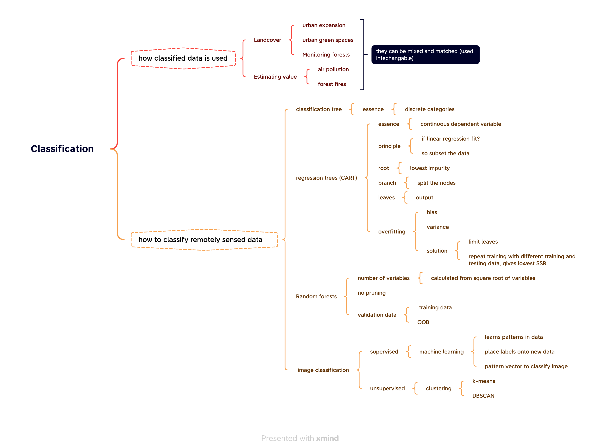

6 Diary: Classification I
6.1 Summary
This lesson mainly covered how classified data is used and how to classify remotely sensed data. In remote sensing, data is generally classified into landcover data and value data. Landcover data is commonly used in fields such as urban expansion, urban green spaces, and monitoring forests, while estimating value is commonly used in fields such as air pollution and forest fires.
In terms of data processing, commonly used methods include classification tree, regression tree, random forests, and image classification.
Classification Tree: A classification tree is a decision tree used for solving classification problems. It is a tree-like structure where each internal node represents a decision based on a specific feature, and each leaf node represents the predicted class label. Classification trees are used to classify instances into discrete classes.
Regression Tree: A regression tree is a decision tree used for solving regression problems. Like a classification tree, it is a tree-like structure, but instead of class labels, the leaf nodes represent continuous values or numerical predictions. Regression trees are used to model the relationship between a dependent continuous variable and a set of independent variables.
Random Forests: A random forest is an ensemble learning method that combines multiple decision trees (either classification or regression trees) to improve prediction accuracy and reduce overfitting. It works by constructing multiple trees and aggregating their predictions, either by majority voting (for classification problems) or averaging (for regression problems). Random forests introduce randomness by bootstrapping the training data for each tree and selecting a random subset of features for each split, which results in better generalization and increased robustness compared to single decision trees.
In image classification, the commonly used supervised method is machine learning, while the commonly used unsupervised method is clustering (such as k-means and DBSCAN).

6.2 Application
Example 1: Regression Tree in Remote Sensing - Estimating Crop Yield Problem: Accurate estimation of crop yield is essential for effective agricultural management, food security, and economic planning. Remote sensing data can provide valuable information to estimate crop yield, but the relationships between the remotely sensed data and crop yield can be complex and nonlinear. Technique Details: Regression tree models, which are a type of decision tree model, can be used to address this issue. They work by recursively partitioning the input data into subsets based on the feature that best explains the variance in the target variable (in this case, crop yield). This process is repeated until a stopping criterion is met, resulting in a tree structure that can predict crop yield based on the input features. Remote sensing data such as vegetation indices (e.g., NDVI) and meteorological data can be used as input features to build the regression tree model. Reference: Gitelson, A.A., Viña, A., Arkebauer, T.J., Rundquist, D.C., Keydan, G., and Leavitt, B. (2003). Remote estimation of leaf area index and green leaf biomass in maize canopies. Geophysical Research Letters, 30(5).
Example 2: Random Forest in Remote Sensing - Land Cover Classification Problem: Land cover classification is a fundamental task in remote sensing, which involves identifying and categorizing various land cover types (e.g., urban, forest, water, etc.) based on remotely sensed data. Accurate land cover classification is crucial for environmental monitoring, urban planning, and natural resource management. Technique Details: Random Forest is an ensemble learning method that constructs a multitude of decision trees during training and outputs the mode of the classes (classification) or mean prediction (regression) of the individual trees. It can be used for land cover classification using remote sensing data such as multispectral or hyperspectral imagery. The random forest classifier can handle large datasets and high-dimensional feature spaces, making it suitable for remote sensing applications. The model can also provide an estimation of variable importance, which can help in understanding the relationships between remote sensing data and land cover types. Reference: Pal, M. (2005). Random forest classifier for remote sensing classification. International Journal of Remote Sensing, 26(1), 217-222.
6.3 Reflection
The usage of classification techniques in remote sensing has been interesting and transformative in various fields, including environmental monitoring, urban planning, and natural resource management. The ability to accurately classify land cover, vegetation types, and other features based on remotely sensed data has significantly improved our understanding of the Earth’s surface and its dynamics. As I reflect on classification usage in remote sensing, several aspects stand out as particularly interesting and relevant for the future. 1. Advancements in machine learning techniques: The emergence of advanced machine learning algorithms, such as support vector machines, random forests, and deep learning, has significantly improved the accuracy and efficiency of remote sensing classification tasks. These algorithms can handle large datasets, high-dimensional feature spaces, and complex relationships between input features and output classes, making them well-suited for remote sensing applications. 2. High-resolution and multispectral data: The increasing availability of high-resolution and multispectral satellite imagery has opened up new possibilities for remote sensing classification tasks. These data sources provide more detailed information about the Earth’s surface, enabling more precise and accurate classification results. This trend is expected to continue as satellite technology advances, offering even higher spatial, spectral, and temporal resolutions. 3. Integration of various data sources: The combination of remote sensing data with other data sources, such as ground-based observations, LiDAR, or socio-economic data, has the potential to improve classification accuracy and provide more comprehensive insights. This data fusion approach can help researchers and decision-makers better understand the relationships between different aspects of the Earth’s surface and their changes over time. 4. Real-time monitoring and change detection: The increasing temporal resolution of satellite data allows for real-time monitoring of the Earth’s surface and the detection of changes in land cover, vegetation, and other features. This capability is crucial for understanding and addressing pressing environmental issues, such as deforestation, urbanization, and climate change impacts. 5. Challenges and future directions: Despite the many advances in remote sensing classification, several challenges remain. These include dealing with data uncertainty, addressing the imbalance in training data, and improving classification accuracy in complex and heterogeneous landscapes. In the future, further advancements in machine learning algorithms, data sources, and data fusion techniques are expected to address these challenges and continue to push the boundaries of remote sensing classification. In conclusion, the use of classification techniques in remote sensing has proven to be incredibly valuable and will likely continue to be an essential tool for understanding and monitoring the Earth’s surface. The integration of advanced machine learning algorithms, high-resolution and multispectral data, and various data sources has the potential to further improve classification accuracy and provide more comprehensive insights into our changing planet. As technology and methods evolve, classification in remote sensing will remain a crucial tool for addressing global environmental challenges and informing sustainable decision-making.